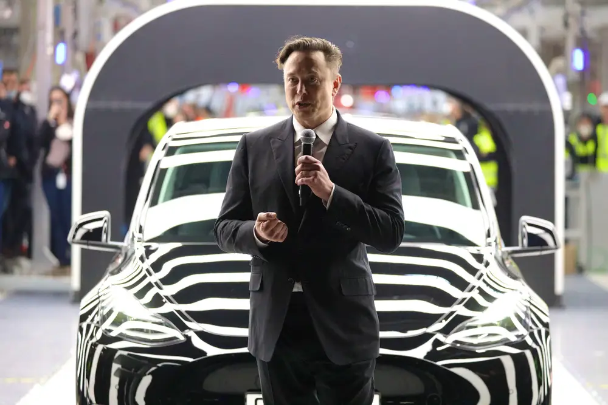

Welcome to the ultimate Elon Musk fan page, where we celebrate the visionary entrepreneur's pioneering spirit and groundbreaking achievements. From revolutionizing electric vehicles with Tesla to pushing the boundaries of space exploration with SpaceX, Musk continues to inspire millions worldwide. Explore his envisioning of a future with sustainable energy and Mars colonization. Join us in honoring Elon Musk's relentless pursuit of innovation and his mission to change the world for the better.
Jump to the poem Chat GPT wrote about Tesla
What Elon Musk has done at Tesla
Elon Musk, as the CEO of Tesla, has revolutionized the electric vehicle industry by overseeing the development and production of high-performance electric cars such as the Model S, Model 3, Model X, and Model Y. He has also spearheaded the creation of the Gigafactories, which are massive manufacturing plants designed to produce batteries and vehicles at scale, significantly lowering costs and increasing production efficiency. Under his leadership, Tesla has expanded into renewable energy solutions, including solar power products and energy storage systems like the Powerwall and Powerpack.- Electric Vehicle Development: Under Elon Musk's leadership, Tesla has produced a range of high-performance electric vehicles, including the Model S, Model 3, Model X, and Model Y.
These vehicles have set new standards for electric car performance, range, and safety, making electric vehicles more appealing and accessible to the general public. They have also introduced two trucks:
- Tesla Cybertruck: The Tesla Cybertruck is a futuristic all-electric pickup truck known for its angular, stainless-steel exoskeleton and impressive performance, offering up to 500 miles of range on a single charge and a towing capacity of over 14,000 pounds.
- Tesla Semi Truck: The Tesla Semi Truck is an all-electric Class 8 semi-truck designed for long-haul freight transport, boasting a range of up to 500 miles on a single charge and the ability to accelerate from 0 to 60 mph in 20 seconds with a full 80,000-pound load.
- Gigafactories: Musk has driven the establishment of Gigafactories, which are massive manufacturing plants designed to produce batteries and electric vehicles on a large scale. These factories, such as Gigafactory Nevada and Gigafactory Shanghai, have significantly reduced production costs and increased Tesla's production capacity, enabling the company to meet growing demand for its products.
- Renewable Energy Solutions: Beyond vehicles, Musk has expanded Tesla's focus to include renewable energy products. Tesla's solar power offerings, like solar panels and Solar Roof, and energy storage solutions, such as the Powerwall for homes and Powerpack for businesses, aim to create a sustainable energy ecosystem by generating, storing, and consuming renewable energy efficiently.

Fun facts about the beginnings of tesla that was established on July 1st, 2003 in San Carlos, CA.
- Inspiration: Tesla was founded by engineers Martin Eberhard and Marc Tarpenning, who were inspired by the potential of electric vehicles to reduce reliance on fossil fuels and combat climate change.
- Elon Musk's Role: Although Elon Musk is often associated with the creation of Tesla, he joined the company as an investor and chairman in 2004, leading a $7.5 million Series A funding round, and later became its CEO and the public face of the company.
- Roadster Origin: Tesla's first car, the Roadster, was built on a Lotus Elise chassis and served as a proof of concept for electric vehicles, demonstrating that they could be high-performance and desirable, which helped change public perception of electric cars.
Representing Tesla
Elon Musk has enjoyed being the public face of Tesla and unveiling it's new cars and technology
A video of Elon Musk talking about making human life multiplanetary
Elon wants to bring humans to Mars
Elon Musk has expressed a strong commitment to making space travel more accessible, with the ultimate goal of establishing human settlements on the Moon and Mars. He has stated that SpaceX's Starship, a fully reusable spacecraft, is designed to carry humans to the Moon by 2024 as part of NASA's Artemis program. Musk envisions Mars colonization as a means to ensure the survival of humanity, aiming to send the first crewed missions to Mars in the 2030s to create a self-sustaining city on the Red Planet.Heres a quick poem about Elon Musks life, including his companys beyond Tesla and Space X.
In Pretoria's sun, a young dreamer grew, With stars in his eyes, visions bold and true. From PayPal to rockets, his journey unfurled, A quest to reshape and to better the world.
Through electric dreams, he sparked Tesla's fire, Crafting cars of the future, driving us higher. Gigafactories rose, with power and might, Turning the tide toward a future so bright.
He reached for the stars, not content with the skies, With SpaceX, he aimed where infinity lies. Reusable rockets soared through the night, Promising journeys to planets in sight.
With SolarCity, he harnessed the rays, Powering homes for the sunniest days. Hyperloops whispered of travel so fast, A vision of transit from future to past.
Neuralink bridged the human machine, A step toward a world both digital and clean. Through tunnels and stars, his legacy's cast, Elon Musk's vision, a future so vast.
Thanks so much for looking at my webisite! I really hope you enjoyed your time spent on it!